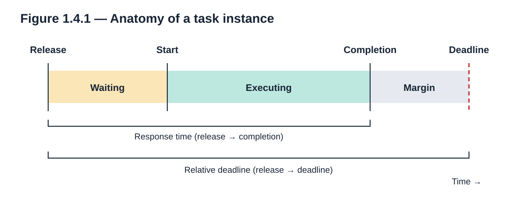
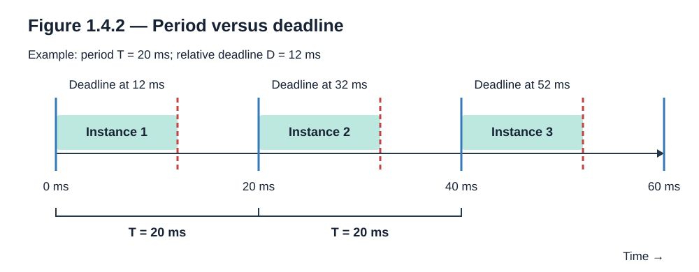
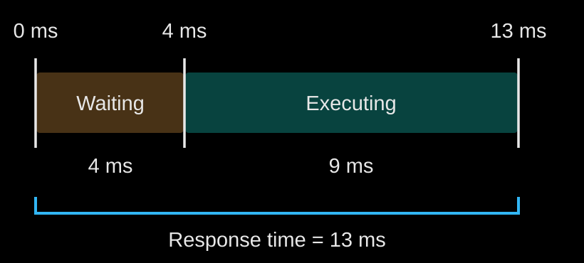

1.4 Timing Concepts in Real-time Systems¶
1.4.1 Why do we need timing measurements?¶
Let's consider a mobile robot that must update its motor commands every 20 ms. The controller reads the robot's current speed, calculates a new motor command, and sends it to the motor driver. A successful calculation is not enough. The controller must also complete its work within the required time.
To evaluate this behaviour, we need to answer several questions:
- When should the task become ready to execute?
- When does it actually start?
- How long does it take to execute?
- When does it finish?
- Does it meet its deadline?
- Does its timing vary between executions?
Real-time engineers use specific timing concepts to answer these questions (View lecture notes).
Task versus task instance
A task is a software operation that may execute repeatedly.
Each individual execution is called a task instance, sometimes also called a job.
For example, a motor-control task released 100 times per second produces 100 task instances per second under its intended periodic schedule. Whether they execute and complete on time depends on the system.
1.4.2 Task release, start, and completion¶
Before discussing execution time and deadlines, we need to distinguish between three important events.
Release time¶
The release time is the instant at which a task instance becomes eligible for execution.
A task may be released by:
- A periodic timer.
- A hardware interrupt.
- The arrival of a sensor measurement.
- A communication event.
Release does not necessarily mean the processor starts executing the task immediately.
Start time¶
The start time is when the processor actually begins executing the task instance.
A released task may have to wait because another task is executing or because it is waiting to be scheduled.
Completion time¶
The completion time is when the task instance finishes its required operation.
Consider the following example.
A sensor-processing task is released at 0 ms, begins executing at 3 ms and completes at 9 ms.

In this example:
- The task is released at 0 ms and becomes eligible to execute.
- It starts at 3 ms, after waiting 3 ms.
- It completes at 9 ms, after running continuously for 6 ms.
Remember
Execution time measures CPU time consumed by the task instance.
Response time measures elapsed time from release to completion, including waiting and interruptions.
Note
In this simple example, the task executes continuously once it starts.
In a real operating system, a task may be interrupted, suspended, or blocked before completion.
Therefore, the time between start and completion is not always equal to the CPU execution time.
1.4.3 Execution time¶
Execution time is the amount of processor time required to execute a task instance.
For a task that executes continuously without interruption:
where:
- \(C\) = execution time
- \(t_{\text{start}}\) = task start time
- \(t_{\text{finish}}\) = task completion time
This simple formula is valid when the task runs continuously during the measured interval.
Example: Motor-control calculation¶
A motor-control task begins executing at 4 ms and finishes at 11 ms without interruption.
Its execution time is:
What if a task is interrupted?¶
Suppose the task:
- Executes for 3 ms.
- Is interrupted by another task for 4 ms.
- Resumes and executes for another 2 ms.
Its CPU execution time is:
However, the elapsed time between its start and completion is:
This distinction matters because the task consumes only 5 ms of CPU time but takes 9 ms of elapsed time from its first start to completion.
The remaining 4 ms is spent in waiting state, while another task executes. Measuring only the time between start and completion therefore does not always reveal the actual CPU execution time.
Worst-case execution time¶
A task may require different amounts of processing time depending on its inputs and execution path.
For example, an obstacle-detection algorithm may:
- Process a small number of measurements in one execution.
- Process a larger number of measurements in another execution.
- Execute additional calculations when an obstacle is detected.
The worst-case execution time (WCET) is an upper bound on the processor execution time required by a task under specified conditions.
It is commonly represented by:
For example, if a validated upper bound is 8 ms:
This means the task's CPU execution demand should not exceed 8 ms under the assumptions used to establish the bound.
Measured maximum versus WCET
The longest execution time observed during testing is not necessarily the true worst-case execution time.
Testing may not exercise every possible input, execution path, or operating conditions.
Establishing a dependable WCET bound can require more advanced analysis.
1.4.4 Task period and frequency¶
Many robotic functions execute periodically, e.g., reading an encoder every 5 ms, updating a motor controller every 10 ms, reading a distance sensor every 50 ms, or updating a monitoring display every 500 ms.
The period, represented by \(T\), is the intended time interval between consecutive releases of a periodic task.
Example: Periodic motor control¶
Suppose a motor-control task is released every 20 ms.
Its release times are:
Therefore:
Frequency¶
Frequency tells us how many periodic cycles occur per second.
where:
- \(f\) = frequency in hertz (Hz)
- \(T\) = period in seconds (s)
Example 1¶
If a robot reads its wheel encoder every 10 ms.
Convert the period into seconds:
Calculate the frequency:
The encoder-reading task is intended to be released 100 times per second. Whether each instance starts and completes on time depends on scheduling and execution delays.
Example 2¶
Let's consider another example where a motor controller operates at 200 Hz. What is its period?
Now we can simply rearrange the frequency formula:
Substitute:
Common conversions¶
| Period | Frequency |
|---|---|
| 1 ms | 1000 Hz |
| 5 ms | 200 Hz |
| 10 ms | 100 Hz |
| 20 ms | 50 Hz |
| 50 ms | 20 Hz |
| 100 ms | 10 Hz |
| 500 ms | 2 Hz |
| 1000 ms | 1 Hz |
Quick calculation
When the period is expressed in milliseconds:
For example, a 25 ms period corresponds to:
1.4.5 Deadlines¶
A deadline is the latest permitted time by which a task instance must complete.
Deadlines are usually defined relative to a task's release time.
Relative deadline¶
The relative deadline, \(D\), is the allowed interval between task release and required completion.
For example:
means the task must complete no later than 15 ms after its release.
Absolute deadline¶
The absolute deadline, \(d\), is the actual point in time by which the task must finish.
It is calculated as:
where:
- \(r\) = release time
- \(D\) = relative deadline
- \(d\) = absolute deadline
Example¶
A task is released at:
Its relative deadline is:
The absolute deadline is:
The task must complete by 52 ms on the same timeline.
Deadline versus period¶
A common mistake is assuming that the task's deadline must always equal its period. This is not true. Consider a task with:
and:
The task is released every 20 ms but must complete within 12 ms of each release.
Its first three releases and deadlines are:
| Instance | Release | Absolute deadline |
|---|---|---|
| 1 | 0 ms | 12 ms |
| 2 | 20 ms | 32 ms |
| 3 | 40 ms | 52 ms |

The task has 8 ms between each deadline and the next release.
Example: Meeting a deadline¶
Suppose the first instance of this motor-control task is released at 0 ms. Its relative deadline is 12 ms, so its absolute deadline is 12 ms.
- If it completes at 9 ms, it meets the deadline by 3 ms.
- If it completes at 15 ms, it misses the deadline by 3 ms.
- The next instance is still intended to be released at 20 ms.
| Instance | Release | Deadline | Example completion |
|---|---|---|---|
| 1 | 0 ms | 12 ms | 9 ms (on time) |
| 2 | 20 ms | 32 ms | 35 ms (late) |
| 3 | 40 ms | 52 ms | 50 ms (on time) |
Note
A period determines when the next instance is intended to be released. A deadline determines when the current instance must finish. They are not interchangeable.
In some systems, deadlines may also be longer than periods, allowing instances to overlap. That more advanced case is beyond the scope of this chapter.
Important
Period: How often a task is intended to be released.
Deadline: How soon each task instance must finish.
They describe different timing requirements.
1.4.6 Response time¶
The response time of a task instance is the elapsed time from its release until its completion.
It includes waiting, scheduling delays, execution, and any interruptions or blocking that occur before completion.
where:
- \(R\) = response time
- \(r\) = release time
- \(t_{\text{completion}}\) = completion time
Example: Sensor-processing task¶
Suppose:
- Release time: 0 ms
- Start time: 4 ms
- Completion time: 13 ms
The response time is:
If the task executes continuously after starting, its execution time is:
The task therefore spends:
- 4 ms waiting to start.
- 9 ms executing.
Its total response time is 13 ms.

- At 0 ms — Release: The task becomes ready to execute, but the processor might be busy executing another task.
- At 4 ms — Start: The processor begins executing this task. It has waited 4 ms.
- At 13 ms — Completion: The task finishes executing. Since it started at 4 ms, its execution took \(13-4=9\) ms.
Does the task meet its deadline?¶
Suppose its relative deadline is:
Since:
the task meets its deadline.
Deadline miss¶
If the task instead completes after 18 ms:
Since:
the task misses its deadline.
The amount by which it misses the deadline is:
Note
The term response time may also refer to the complete response of a robotic system to an external event.
Always identify the start and end events of a measurement.
Task response time and end-to-end robot response time are not necessarily the same.
1.4.7 Deadline margin¶
Deadline margin is the difference between the completion time of a task instance and its deadline. It is also informally called the remaining time before the deadline.
For a completed task instance:
where:
- \(S\) = deadline margin, also referred to as slack
- \(D\) = relative deadline
- \(R\) = response time
Example¶
A task has:
and completes with:
Therefore:
The task finishes 4 ms before its deadline.
Interpretation:
| Deadline margin (S) | Meaning |
|---|---|
| Positive | Task finishes before its deadline |
| Zero | Task finishes exactly at its deadline |
| Negative | Task misses its deadline |
For example:
means the task finishes 3 ms after its deadline.
Note
This calculation describes the observed deadline margin of a completed task instance.
In scheduling theory, slack or laxity may also describe the time remaining before a deadline after accounting for unfinished execution work.
1.4.8 Latency¶
Latency is the delay between a defined event and a corresponding response. The exact meaning depends on what is being measured. In robotics, several types of latency are important.
Sensor latency¶
The time between a physical event/measurement and the availability of the corresponding sensor data.
Scheduling latency¶
The delay between a task becoming ready to execute and the operating system allowing it to begin or resume execution.
Communication latency¶
The time required for information to travel between components.
End-to-end response latency¶
The time between an external event and a specified system response.
Example: Mobile robot obstacle response¶
Suppose a robot detects an obstacle. Its response chain contains:
| Operation | Time |
|---|---|
| Sensor acquisition | 6 ms |
| Communication to controller | 2 ms |
| Scheduling delay | 3 ms |
| Controller processing | 5 ms |
| Motor-command transmission | 2 ms |
Assuming these stages occur sequentially:
The calculated 18 ms is the elapsed time from the beginning of the specified sensor acquisition operation until the motor command reaches the motor driver.
It is not necessarily the time from the instant an obstacle first appears: if sensing is periodic, the obstacle may appear just after a measurement, introducing additional waiting before the next measurement begins.
NOTE: Motor's response and the robot's physical braking time aren't included in the calculation above. Thus, the complete collision-avoidance response can be longer than 18 ms.
Why does latency matter?¶
Suppose the robot travels at:
During an 18 ms delay:
Assuming constant speed:
The robot travels 1.8 cm before the command reaches the motor driver.
Actual stopping distance will be greater because the robot still needs to decelerate.
Warning
Latency calculations must use clearly defined start and end events.
For example, measuring from the start of sensor acquisition is different from measuring from the instant an obstacle first enters the sensor's detection range.
1.4.9 Jitter¶
Even when a task is intended to execute at regular intervals, its actual timing may vary. This variation is called jitter.
In real-time systems, jitter can refer to variations in:
- Task activation/release times
- Task start times
- Completion times
- Execution intervals
- Response latency
It is important to specify which type is being measured.
Example: Variation in motor-control task start times¶
A motor-control task has a nominal period of 10 ms. For this example, let's suppose its ideal execution starts coincide with the intended releases.
Its ideal start times are:
However, the measured start times are:
The actual intervals between consecutive starts are:
These intervals are not identical.
Start-interval deviation¶
Here we measure variation in the intervals between consecutive execution starts. We define the signed start-interval deviation as:
where:
- \(J_i\) = signed deviation for interval \(i\)
- \(T_{\text{actual},i}\) = measured interval
- \(T_{\text{nominal}}\) = intended period
For a nominal period of 10 ms:
| Actual interval | Signed deviation |
|---|---|
| 11 ms | +1 ms |
| 9 ms | -1 ms |
| 12 ms | +2 ms |
| 9 ms | -1 ms |
A positive value means the interval is longer than intended.
A negative value means the interval is shorter than intended.
Maximum absolute start-interval deviation¶
A simple summary measure is:
For the example:
The largest observed deviation of the measured start-to-start intervals from the nominal period is 2 ms. This is not a measurement of release jitter.
Jitter terminology
Different technical sources use different jitter metrics.
For example, engineers may measure maximum absolute period deviation, peak-to-peak variation, release jitter, or start-time jitter.
Therefore, always state the metric used.
Why does jitter matter in robotics?¶
Consider a controller that expects fresh sensor information every 10 ms. If actual updates occur at irregular intervals, the controller may receive measurements earlier or later than expected.
This can affect:
- Control-loop consistency,
- Sensor-data timing,
- Motion estimation,
- Coordination between software tasks
The effect depends on the controller design and the magnitude of the variation.
1.4.10 Why periodic timing can drift?¶
Consider a simple program that repeatedly performs an operation and then waits for 10 ms.
REPEAT:
Perform task
Wait 10 ms
Suppose the task takes 3 ms to execute. Ignoring other delays, each cycle takes:
The program therefore starts the task approximately every 13 ms, not every 10 ms. If execution time varies, the start-to-start interval varies too.
Why does this cause timing drift?¶
Suppose a motor controller is intended to update its commands every 10 ms.
Its ideal release times are:
With 3 ms of work followed by a 10 ms wait, its approximate actual start times instead become:
The difference from the intended schedule grows over successive cycles. This is accumulated timing drift.
A better approach: Fixed periodic timing¶
Instead of waiting for a fixed duration after each execution, the program can follow fixed intended release times:
SET period = 10 ms
SET next_release = current_time
REPEAT:
WAIT until next_release
Perform task
next_release = next_release + period
The intended release times remain:
If each execution takes 3 ms, starts exactly on time, and runs without interruption:
| Intended release | Execution interval | Next intended release |
|---|---|---|
| 0 ms | 0–3 ms | 10 ms |
| 10 ms | 10–13 ms | 20 ms |
| 20 ms | 20–23 ms | 30 ms |
| 30 ms | 30–33 ms | 40 ms |
The execution time is no longer added to the intended period.
Note
These are idealised times. In a real operating system, actual task execution may start late because of scheduling delays.
What happens if the task takes too long?¶
Suppose a task has a period of 10 ms but takes 12 ms to complete. The next intended release occurs before the previous instance has finished: the task has overrun its period.
A fixed periodic schedule does not solve an overrun automatically. The software needs a defined policy for missed releases or unfinished work, such as reporting a timing violation or skipping an outdated update when appropriate.
Real-world implementation¶
FreeRTOS provides vTaskDelayUntil() and xTaskDelayUntil() for periodic timing. These functions calculate wake-up times relative to a previous wake-up reference rather than adding a fixed wait after each execution (View official FreeRTOS documentation).
We will explore this approach in later programming exercises.
Key concept
A fixed periodic schedule helps prevent accumulated timing drift.
It does not guarantee that every task starts exactly on time or meets its deadline. Actual timing still depends on execution demand, scheduling and system workload.
1.4.11 Detailed example: Robot motor controller¶
A mobile robot has a periodic motor-control task.
The task has the following requirements:
- Period: 20 ms
- Relative deadline: 15 ms
For one execution, the measured times are:
- Release: 40 ms
- Start: 44 ms
- Completion: 53 ms
Calculate:
- Task frequency.
- Absolute deadline.
- Waiting time before execution.
- Execution time, assuming uninterrupted execution.
- Response time.
- Deadline margin.
- Whether the deadline is met.
Note
Before scorlling down for the solution, try to calculate yourself on a piece of paper.
Solution¶
1. Frequency
2. Absolute deadline
3. Waiting time
4. Execution time
5. Response time
6. Deadline margin
7. Deadline evaluation
The response time is 13 ms, which is less than the 15 ms deadline.
Therefore, the task meets its deadline with a 2 ms margin.